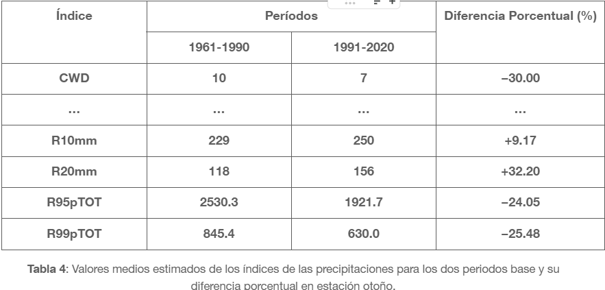
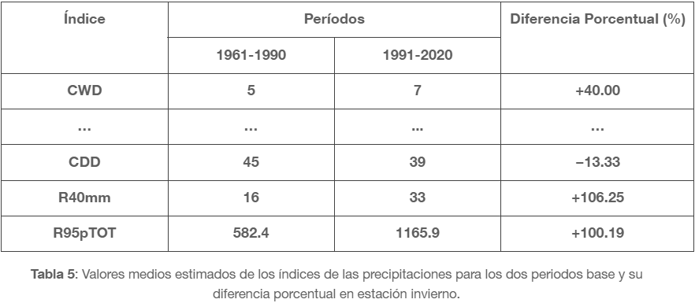
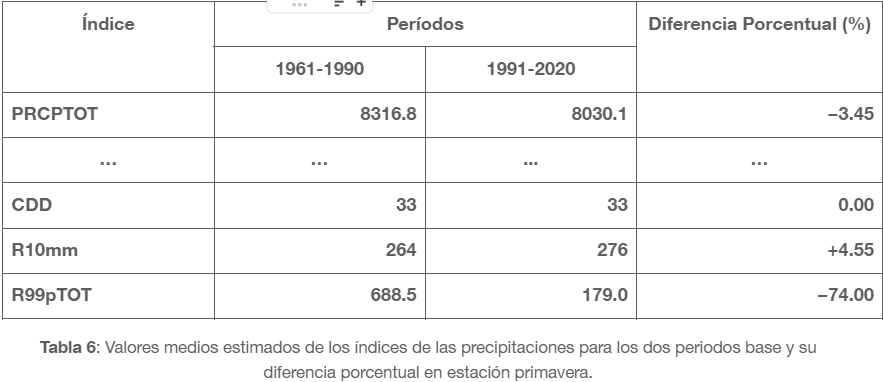

VARIACIÓN TEMPORAL DE ÍNDICES DE PRECIPITACIÓN EXTREMA EN LA CIUDAD DE LA PLATA
Expo 2025
Matemática 4 - Franco Kumichel, Juan Volpe
¿Por qué elegimos el tema?
- Relación con múltiples factores de manera directa.
- Interés en aplicación estadística por parte de ambos.
- Documentación, papers e información a disposición.
Motivación
En los últimos años, la ciudad de La Plata ha experimentado una mayor frecuencia de eventos de precipitación extrema, los cuales generan impactos significativos en la infraestructura urbana, el transporte y la vida cotidiana.
Analizar la variación temporal de estos eventos permite comprender si se observan tendencias crecientes y evaluar posibles cambios en el clima local.
Objetivo del estudio
- Analizar tendencias de precipitación extrema.
- Detectar cambios significativos.
- Explorar relaciones con fenómenos regionales.
Preparación de los datos y análisis
📩 Datos faltantes y particularidades. ¿Que decisiones tomamos?
📋 Transformación a índices de precipitación (ETCCDI).
📊 Homogeneidad y tests empleados (SNHT, Buishand y Pettitt).
📈 Cambios estructurales y puntos de quiebre.
Características representativas en los datos
- Intensidad y acumulación.
- Frecuencia de días húmedos y secos.
- Eventos extremos (percentiles).
- Persistencia de días lluviosos.
Metodología general
Se estimaron índices de precipitación diaria,
(La Plata AERO, 1961–2024) evaluados en tres escalas:
- Anual
- Estacional
- Subperíodos 1961–1990 / 1991–2020
Índices de precipitación (ETCCDI)
| Índice | Nombre | Definición | Unidad |
|---|---|---|---|
| RX1day | Máx. precipitación en 1 día | Máximo diario en el año | mm |
| RX5day | Máx. precipitación en 5 días | Máximo en 5 días consecutivos | mm |
| SDII | Intensidad diaria simple | Σ(RRw) / W | mm/día |
| PRCPTOT | Total anual | Σ(RRw) | mm |
Más índices (ETCCDI)
| Índice | Nombre | Definición | Unidad |
|---|---|---|---|
| R10mm | Días ≥ 10 mm | Frecuencia de eventos intensos | días |
| R20mm | Días ≥ 20 mm | Eventos más extremos | días |
| R95pTOT | %95 | Precipitación sobre percentil 95 | mm |
| R99pTOT | %99 | Precipitación sobre percentil 99 | mm |
Persistencia
| Índice | Nombre | Definición | Unidad |
|---|---|---|---|
| CWD | Días húmedos consecutivos | RR ≥ 1 mm | días |
| CDD | Días secos consecutivos | RR < 1 mm | días |
Detección de Tendencias
Se emplearon tests no paramétricos
Mann–Kendall
- Detecta si existe tendencia.
- H₀: sin tendencia (p > 0.05).
- H₁: Tendencia positiva/negativa
Theil–Sen
- Empleado para verificar tendencia detectada.
- Alta eficiencia con muestras no tan grandes.
- Robusto ante valores atípicos.
Resultados de tendencias
Período de Verano

Incremento generalizado en PRCPTOT, en los eventos extremos y disminución de secuencias húmedas, indican lluvias más intensas pero no más concentradas.
Período de Otoño
Leve aumento de PRCPTOT y lluvias moderadas, las secuencias húmedas se acortan, lo que podría indicar lluvias más intermitentes.
Aunque se observan tendencias de aumento en algunos índices, no se encontró significancia estadística para respaldarlas..
Resultados de tendencias
Período de Invierno
Aumento de la intensidad y frecuencia de eventos extremos, el crecimiento de CWD y la baja de CDD sugieren inviernos más húmedos y activos.
Período de Primavera
Disminución generalizada en PRCPTOT, reducciones fuertes en R99pTOT y Rx5day, manteniendo la duración de periodos secos, indicando una transición hacia primaveras más secas y menos intensas.
Aunque se observan tendencias de aumento en algunos índices, no se encontró significancia estadística para respaldarlas..
Regresión lineal múltiple
Analizamos los factores que influyen en la variabilidad de los indicadores
- Variables dep.: Rx1day, PRCPTOT, CWD.
- Predictores: resto de índices.
- Multicolinealidad → se mitigó empleando PCA.
- En lugar de usar los índices originales, las regresiones se ajustaron con sus componentes principales.
- Generamos var. no coorrelacionadas, evitando sesgos y mejorando el modelo.
- Se identifican, para cada índice de interés, las combinaciones de predictores más relevantes.
- Los modelos finales son estadísticamente robustos, sin problemas de multicolinealidad y con mejor capacidad explicativa.
Proceso aplicado de Reg. Lineal Múltiple
- Elección de var. dependiente y una posible combinación de var. explicativas
- Aplicar PCA sobre las var. explicativas, variando componentes.
- Ajustar el modelo utilizando los componentes principales como predictores.
- Obtener el mejor modelo en base a las combinaciones y empleando cómo métricas: \(\mathcal{R}\) y \(\mathcal{r}^2\)
Conclusiones
- Aumento leve en eventos intensos.
- Mayor variabilidad interanual reciente.
- Relevancia del monitoreo continuo.
- El modelo sugiere buena predicción para métricas de intensidad, no así para índices de persistencia.
✨ Agradecimientos ✨
- A todos los oyentes y colaboradores!
- Toda la cátedra de Matemática IV!
- Por el espacio y la oportunidad!